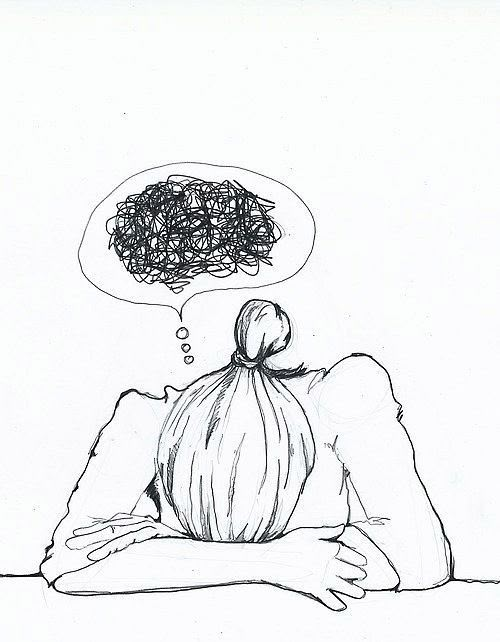
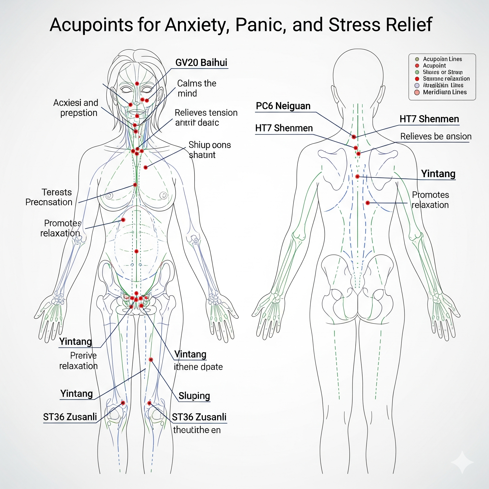
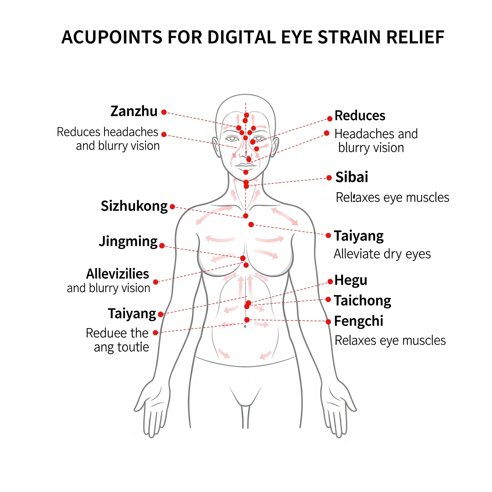
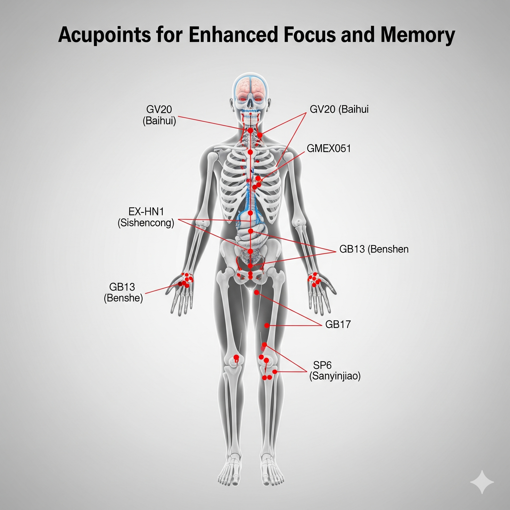
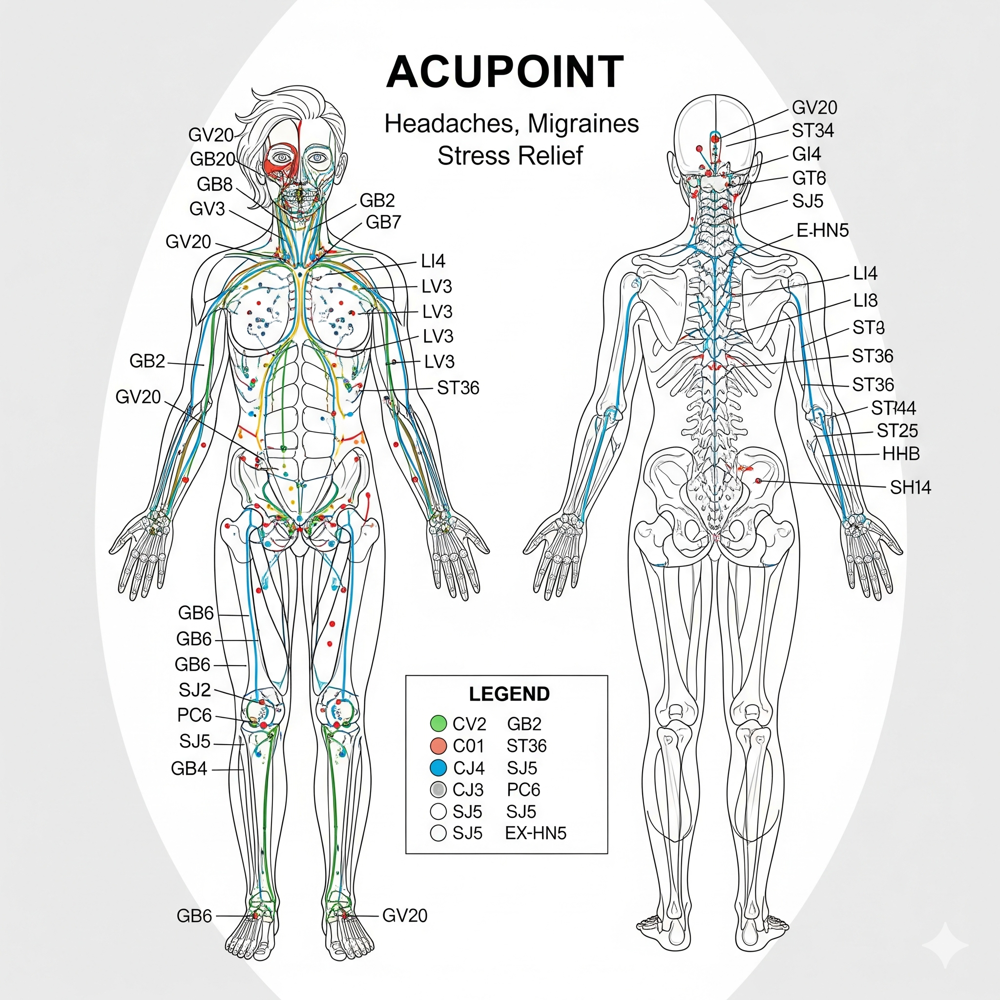
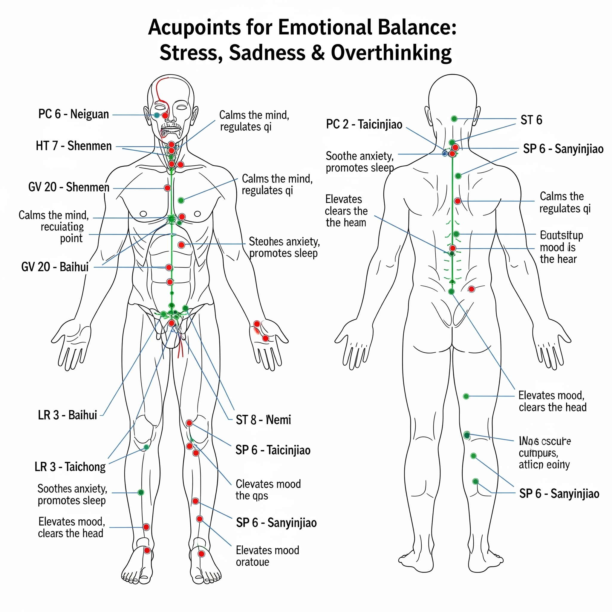
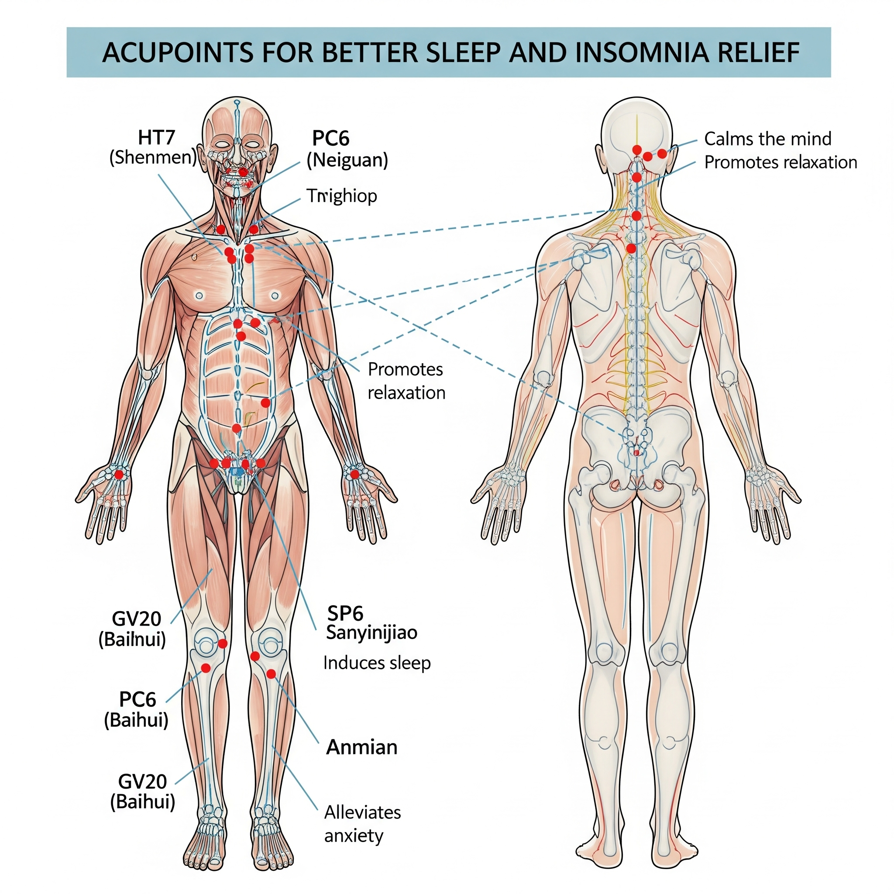

Anxiety Relief
Press the point between your eyebrows or the inner wrist. Hold 2–3 minutes. Helps calm nerves and reduce restlessness.

Relieve Eye Strain
Massage the point between your thumb and index finger or inner eye corners. Helps relax tired eyes.

Improve Focus
Press the third-eye point and temples. Increases clarity and concentration.

Headache Relief
Apply pressure to the hand valley (between thumb & index finger). Helps reduce tension headaches.

Overthinking Relief
Massage temples and behind ears. Helps quiet the mind.

Better Sleep
Press the “Spirit Gate” at the wrist crease for 3 minutes before bed. Promotes relaxation.